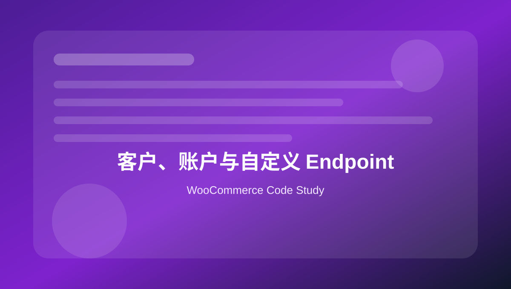

15 客户、账户与自定义 Endpoint
整理客户数据、账户菜单、我的账户 endpoint、用户 meta 和订单列表扩展。

本页关键词
my account
endpoints
customer meta
WC_Customer
account menu
学习目标
- 会读取客户对象
- 会添加我的账户菜单
- 会注册 account endpoint
- 会保存客户自定义字段
- 知道账户页面涉及隐私数据
代码使用提醒
本页代码用于学习和研究。复制到正式 WooCommerce 网站前，请先备份，并优先在测试环境验证。
凡是影响价格、库存、支付、订单、邮件和客户数据的代码，都需要完整测试购物车、结账、付款、退款、邮件和后台订单处理流程。
1. 读取当前客户信息
基础 · php
<?php
$user_id = get_current_user_id();
if ( $user_id ) {
$customer = new WC_Customer( $user_id );
echo esc_html( $customer->get_billing_email() );
echo esc_html( $customer->get_billing_phone() );
}
客户信息可能来自用户 meta 和订单账单信息。
2. 添加我的账户菜单项
实用 · php
<?php
function mywoo_account_menu_items( $items ) {
$new = array();
foreach ( $items as $key => $label ) {
$new[ $key ] = $label;
if ( 'orders' === $key ) {
$new['project-files'] = 'Project Files';
}
}
return $new;
}
add_filter( 'woocommerce_account_menu_items', 'mywoo_account_menu_items' );
可以在我的账户中插入自定义功能入口。
3. 注册我的账户 endpoint
实用 · php
<?php
function mywoo_add_account_endpoint() {
add_rewrite_endpoint( 'project-files', EP_ROOT | EP_PAGES );
}
add_action( 'init', 'mywoo_add_account_endpoint' );
新增 endpoint 后需要刷新固定链接。
4. 输出 endpoint 内容
实用 · php
<?php
function mywoo_project_files_endpoint_content() {
echo '<h3>Project Files</h3>';
echo '<p>Your downloadable project documents will appear here.</p>';
}
add_action( 'woocommerce_account_project-files_endpoint', 'mywoo_project_files_endpoint_content' );
hook 名包含 endpoint slug。
5. 保存客户资料字段
进阶 · php
<?php
function mywoo_save_account_extra_fields( $user_id ) {
if ( isset( $_POST['company_type'] ) ) {
update_user_meta(
$user_id,
'company_type',
sanitize_text_field( wp_unslash( $_POST['company_type'] ) )
);
}
}
add_action( 'woocommerce_save_account_details', 'mywoo_save_account_extra_fields' );
客户输入必须 sanitize。
6. 账户订单列表增加操作按钮
实用 · php
<?php
function mywoo_account_order_actions( $actions, $order ) {
if ( $order->has_status( 'completed' ) ) {
$actions['download-guide'] = array(
'url' => home_url( '/installation-guide/' ),
'name' => 'Installation Guide',
);
}
return $actions;
}
add_filter( 'woocommerce_my_account_my_orders_actions', 'mywoo_account_order_actions', 10, 2 );
可根据订单状态给客户提供后续操作。
本页总结
账户页代码涉及客户隐私和订单信息，扩展时要做好登录判断、权限控制和数据转义。